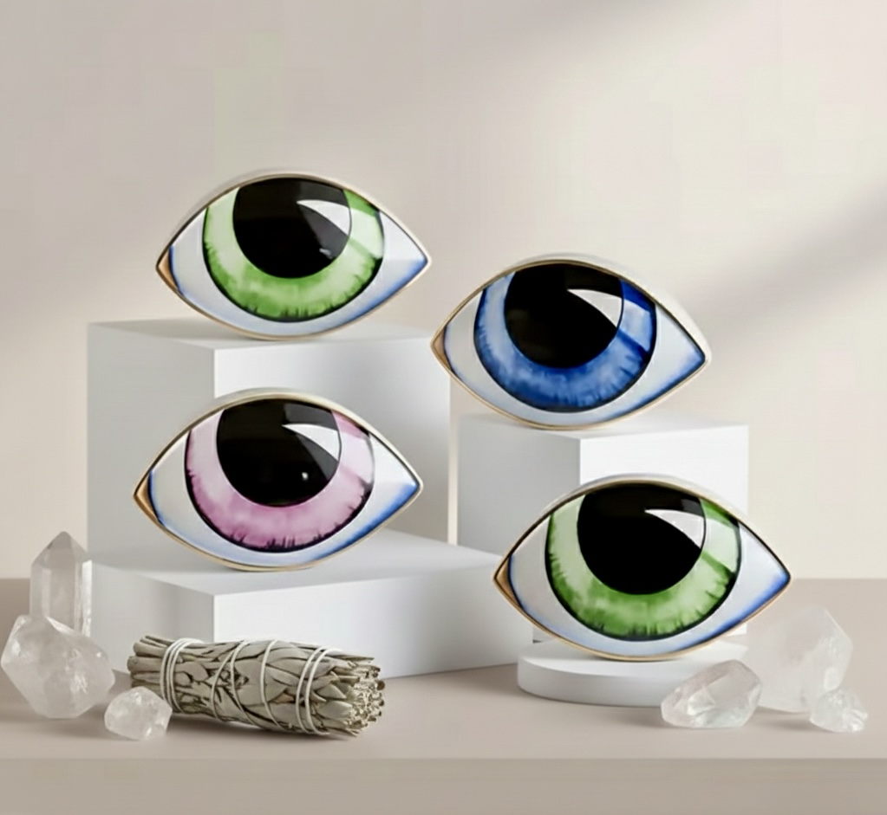

Casa Escobosa es un espacio de creación consciente donde el arte, la energía y el diseño se encuentran para habitar los espacios con calma, intención y belleza.
Cada pieza es seleccionada y concebida para transmitir paz, equilibrio y una elegancia silenciosa que no necesita exceso para sentirse valiosa.
El ojo es símbolo de protección, presencia y visión interior. Representa la conexión entre el espacio y quien lo habita, recordándonos que la energía también se diseña.
Más que decoración, cada objeto de Casa Escobosa es una invitación a vivir con intención, a rodearse de piezas que se sienten, no solo se miran.